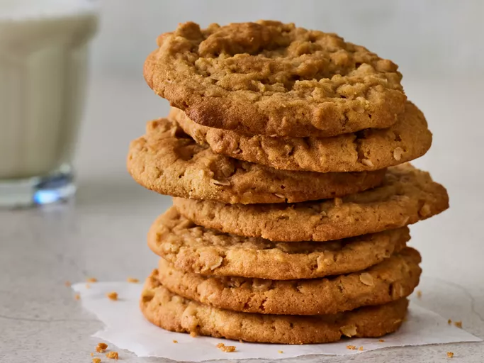

Oatmeal Peanut Butter Cookies

Description
These peanut butter oatmeal cookies are a nice change of pace from the
usual peanut butter
cookie. My girlfriend never liked peanut butter cookies until I made him this recipe.
Ingredients
- 1 cup peanut butter
- 1 cup packed brown sugar
- ¾ cup white sugar
- ½ cup shortening
- ½ cup margarine, softened
- 2 large eggs
- 1 ½ cups all-purpose flour
- 2 teaspoons baking soda
- 1 teaspoon salt
- 1 cup quick-cooking oats
Steps
- Preheat the oven to 350 degrees F (175 degrees C).
- Beat peanut butter, brown sugar, white sugar, shortening, and margarine in a large bowl with an electric
mixer on medium speed until smooth and creamy.
Beat in eggs, one at a time, until well blended.
- Combine flour, baking soda, and salt
in a separate bowl; stir into creamed mixture until incorporated. Mix in oats
until just combined.
- Drop teaspoonfuls of dough onto ungreased cookie sheets.
- Bake cookies in the preheated oven until just lightly browned,
10 to 15 minutes. Do not overbake. Cool and store in an airtight container.